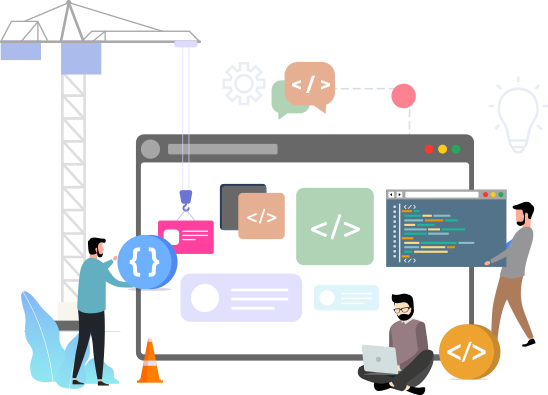

Front-End
¿Que es el Front-end?
Se relaciona con todo lo que ven las personas, esto incluye el diseño (bien sea UI o UX) y ciertos lenguajes.
Además, destaca por su característica funcional, pues sirve para que el usuario entre e interactúe con cualquier sitio. Motivo por el que debe cumplir con altos estándares de usabilidad y estética.
Podemos decir que el Front-end es la capa que se encuentra por encima del Back-end, ya que comprende menús desplegables, imágenes, íconos, colores, elementos gráficos, animaciones y, sin lugar a dudas, mejora la experiencia de navegación en el lado delantero o frontal.
¿Cuales son los roles dentro del frontend?
UX (User Experience): Es la persona que se encarga de que el sitio sea usable y que la experiencia del usuario sea agradable. Esta persona tiene el conocimiento de todas las etapas de un proceso (Registro de usuario, login, etc), hay ciertos pasos a considerar, para crear un buen diseño, es necesario entender las necesidades de los usuarios.
UI (User Interface): Es la persona encargada de realizar diseños de una página web, usa herramientas como: Photoshop, AdobeXD, Sketch, etc. Está encargada de la interacción de usuario, de todas las etapas que se va a realizar para una determinada tarea, según los requerimientos, realiza los diseños, previa coordinación con un equipo de desarrollo. No es alguien aislado que realice un diseño por su cuenta, esta persona está enfocada en el usuario con un diseño interactivo e intuitivo, asegurando que el sitio web sea atractivo a la vista y que se puede interactuar con ella de una manera exitosa.
Web Designer o Maquetador: Es la persona encargada de recoger las maquetas que ha diseñado el UI y llevarlos a código HTML, CSS y JavaScript. Este es un rol muy específico, se verifica que el código funcione en los distintos navegadores, que sea responsive design y todo lo que tenga que ver con la parte visual de una web.
Front-end Developer o Programador Front-end: Es la persona que programa toda la lógica del lado del cliente, generalmente haciendo uso de alguna librería o framework, consume una API que bien podrían venir del back-end o algún servidor externo, este no se encarga del diseño.

¿Cual es la funcion de cada uno de esos roles?
Las responsabilidades del diseñador UX son:
- Prototipos
- Diseños
- Entevistas al cliente
- Pruebas de usabilidad
- Simulacion del sitio Web
Las responsabilidades del diseñador UI son:
- Diseño visual.
- Guías de estilo.
- Diseño de interfaz.
- Diseño de interacción.
- Diseño de elementos.
Las responsabilidades del Web Designer o Maquetador son:
- Implementar codigo HTML, CSS Y JAVaSCRIPT
- Verificar que el sitio web sea resposive Desing
- Verificar la funcionalidad en los distintos navegadores web

¿Cuales son los principales lenguajes y frameworks utilizados en el frontend?
Quienes desarrollan el Front-end son responsables del código orientado a la inmersión del sujeto en el sitio. Para lograrlo los expertos deben conocer tres idiomas esenciales:
Javascript;
CSS;
HTML.
Así como estar familiarizados con frameworks como:
Foundation;
Bootstrap;
AngularJS;
Ember JS;
Backbone.